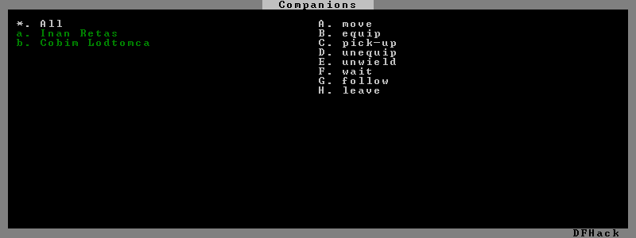

gui/companion-order¶
This tool allows you to issue orders to your adventurer’s companions. Select which companions to issue orders to with lower case letters (green when selected), then issue orders with upper case letters. You must be in look or talk mode to issue commands that refer to a tile location (e.g. move/equip/pick-up).
Usage¶
gui/companion-order [-c]
Call with -c to enable “cheating” orders (see below).
Orders¶
- move:
Order selected companions to move to a location. If the companions are currently following you, they will move no more than 3 tiles from you.
- equip:
Try to equip the items on the ground at the selected tile.
- pick-up:
Try to take items at the selected tile and wield them.
- unequip:
Remove and drop equipment.
- unwield:
Drop held items.
- wait:
Temporarily leave party.
- follow:
Rejoin the party after “wait”.
- leave:
Permanently leave party (can be rejoined by talking).
If gui/companion-order was called with the -c option, the following
orders will be available:
- patch up:
Heal all wounds.
- get in:
Ride thing (e.g. minecart) at cursor. There may be some graphical anomalies when pushing a minecart with a companion riding in it.
Screenshot¶
Here is a screenshot of the tool in action:
